Help Contents: |
Close this window |
DSpace captures, distributes and preserves digital research products. Here you can find articles, working papers, preprints, technical reports, conference papers and data sets in various digital formats. Content grows daily as new communities and collections are added to DSpace.
The DSpace content is organized around Communities which can correspond to administrative entities such as schools, departments, labs and research centers. Within each community there can be an unlimited number subcommunities and an unlimited number of collections. Each collection may contain an unlimited number of items.
| BROWSE | top |
Browse allows you to go through a list of items in some specified order:
Browse by Community/Collection takes you through the communities in alphabetical order and allows you to see the subcommunities and collections within each community.
Browse by Title allows you to move through an alphabetical list of all titles of items in DSpace.
Browse by Author allows you to move through an alphabetical list of all authors of items in DSpace.
Browse by Subject allows you to move through an alphabetical list of subjects assigned to items in DSpace.
Browse by Date allows you to move through a list of all items in DSpace in reverse chronological order.
You may sign on to the system if you:
Submit is the DSpace function that enables users to add an item to DSpace. The process of submission includes filling out information about the item on a metadata form and uploading the file(s) comprising the digital item. Each community sets its own submission policy.
My DSpace is a personal page that is maintained for each member. This page can contain a list of items that are in the submission process for a particular member, or a task list of items that need attention such as editing, reviewing, or checking. In the future this page will also maintain information about personal services offered by DSpace, such as e-mail notification when new items are added to a collection.
Edit Profile allows you to change your password.
About takes you to information about the DSpace project and its development.
| SEARCH | top |
To search all of DSpace, use the yellow search box at the top of the navigation bar on the left (or the search box in the middle of the home page)
To limit your search to a specific community or collection, navigate to that community or collection and use the search bar on that page.

DSpace uses the Jakarta Lucene search engine. Here are some search hints:
What is searched in the general keyword search (yellow box)
The word(s) you enter in the search box will be searched against the title, author, subject abstract, series, sponsor and identifier fields of each item's record.If your site is enabled for full-text searching, the text you entered will also be searched against the full text of all archived documents. For more information on full-text searching please contact your DSpace Administrator.
What is not searched - Stop Words
The search engine ignores certain words that occur frequently in English, but do not add value to the search. These are:"a", "and" , "are" , "as" , "at" , "be" , "but" , "by" , "for" , "if" , "in" , "into",
"is" ,"it" ,"no" , "not" , "of" , "on" , "or" , "such", "the" , "to" , "was"
Truncation
Use an asterisk (*) after a word stem to get all hits having words starting with that root, for example: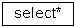 will retrieve selects, selector, selectman, selecting.
Stemming
The search engine automatically expands words with common endings to include plurals, past tenses ...etc.Phrase Searching
To search using multiple words as a phrase, put quotation marks (") around the phrase.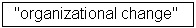
Exact word match
Put a plus (+) sign before a word if it MUST appear in the search result. For instance, in the following search the word "training" is optional, but the word "dog" must be in the result.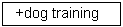
Eliminate items with unwanted words
Put a minus (-) sign before a word if it should not appear in the search results. Alternatively, you can use NOT. This can limit your search to eliminate unwanted hits. For instance, in the search
or
you will get items containing the word "training", except those that also contain the word "cat".
Boolean searching
The following Boolean operators can be used to combine terms. Note that they must be CAPITALIZED !
AND - to limit searches to find items containing all words or phrases combined with this operator, e.g.
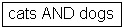 will retrieve all items that contain BOTH the words "cats" and "dogs".
OR - to enlarge searches to find items containing any of the words or phrases surrounding this operator
will retrieve all items that contain EITHER the words "cats" or "dogs".
NOT - to exclude items containing the word following this operator, e.g.
will retrieve all items that contain the word "training" EXCEPT those also containing the word "cat".
Parentheses can be used in the search query to group search terms into sets, and operators can then be applied to the whole set, e.g.

| ADVANCED SEARCH | top |
The advanced search page allows you to specify the fields you wish to search, and to combine these searches with the Boolean "and", "or" or "not".
You can restrict your search to a community by clicking on the arrow to the right of the top box. If you want your search to encompass all of DSpace, leave that box in the default position.
Then select the field to search in the left hand column and enter the word or phrase you are searching in the right hand column. You can select the Boolean operator to combine searches by clicking on the arrow to the right of the "AND" box.
Note: You must use the input boxes in order. If you leave the first one blank your search will not work.
| SUBJECT CATEGORY SEARCH | top |
A controlled vocabulary is a set of terms which form a dictionary of descriptions of particular types of content or subject matter. These are maintained by standards bodies in order to standardise the way that similar materials are categorised in archives. This aids searching by increasing the likelihood that the relevant materials will be returned by the user's search.
Filtering the category list will remove from the list any terms which do not match the filter. The remaining terms are any category or sub category which contains the filter term anywhere in the heirarchy. Expanding each category will show you which terms (or sub terms) did match the filter.
To search the archive items by the subject category, check as many boxes next to the categories as necessary, before clicking "Search...". The search will return all items that either match the categories selected exactly, or which are categorised underneath a higher level category. Clicking on the "+" next to the category will expand the tree to show you what refinements are available for your selected category.
| COMMUNITIES | top |
The DSpace content is organized around Communities which can correspond to administrative entities such as schools, departments, labs and research centers. Within each community there can be an unlimited number subcommunities and an unlimited number of collections. Each collection may contain an unlimited number of items. This organization gives DSpace the flexibility to accommodate differing needs of communities by allowing them to
Each community has its own entry page displaying information, news and links reflecting the interests of that community, as well as a descriptive list of collections within the community.
| COLLECTIONS | top |
Communities can maintain an unlimited number of collections in DSpace. Collections can be organized around a topic, or by type of information (such as working papers or datasets) or by any other sorting method a community finds useful in organizing its digital items. Collections can have different policies and workflows.
Each DSpace collection has its own entry page displaying information, news and links reflecting the interests of users of that collection.
| SIGN ON TO DSPACE | top |
When you access an area of DSpace that requires authorization, the system will require you to log in. All users can register to become subscribers. Some restricted functions, such as content submission, require authorization from the community
Before you log in for the first time, you will need to click on "register with DSpace" and follow the instructions. After that, you will need to enter your e-mail address and password in the log-in form that appears. Your e-mail address should include your username and domain name. It is not case sensitive.
Example: moniker@mycorp.com
Type your password exactly as you entered it originally. It is case sensitive. Be sure to click on the "log in" button to continue.
| SUBMIT | top |
The submit module in AgriOcean DSpace has a different template for the most important document and content types: Journal Contribution, Book, Book Section, Proceedings Paper, Conference Material, Research Report, Theses and Dissertations, Working Paper, Map, Data Set, Audiovisual Material and Other.
The different templates contains specific describing elements when needed, but have at the same time many elements in common. The submission goes to three main steps: description of the metadata (3 pages), upload (file by file), verification and the license agreement.
The information you fill in on the describe screens will form the metadata record that will enable users to retrieve your item using search engines. The richer the metadata, the more "findable" your item will be, so please take the time to fill in as many fields as are applicable to your item.
Select Collection:
Click on the arrow at the right of the drop-down box to see a list of Collections. Move your mouse to the collection into which you wish to add your item and click.
(If you are denied permission to submit to the collection you choose, please contact your DSpace Administrator for more information.)
You must be authorized by a community to submit items to a collection. If you would like to submit an item to DSpace, but don't see an appropriate community, please contact your DSpace Administrator to find out how you can get your community set up in DSpace.
Click on the "next" button to proceed, or "cancel/save" button to stop and save or cancel your submission.
| SUBMIT | top |
Progress Bar - Oval Buttons at Top of Page:
At the top of the submit pages you will find 7 oval buttons representing each step in the submission process. As you move through the process these ovals will change color. Once you have started you can also use these buttons to move back and forth within the submission process by clicking on them. You will not lose data by moving back and forth.

Select Collection:
Click on the arrow at the right of the drop-down box to see a list of Collections. Move your mouse to the collection into which you wish to add your item and click.
(If you are denied permission to submit to the collection you choose, please contact your DSpace Administrator for more information.)
You must be authorized by a community to submit items to a collection. If you would like to submit an item to DSpace, but don't see an appropriate community, please contact your DSpace Administrator to find out how you can get your community set up in DSpace.
Click on the "next" button to proceed, or "stop" button to stop and save or cancel your submission.
At any point in the submission process you can stop and save your work for a later date by clicking on the "stop" button at the bottom of the page. The data you have already entered will be stored until you come back to the submission, and you will be reminded on your "My DSpace" page that you have a submission in process. If somehow you accidentally exit from the submit process, you can always resume from your "My DSpace" page. You can also cancel your submission at any point.
| SUBMIT: Description of the submission option by group of fields | top |
All the elements and fields will be described explaining their content following the field group order
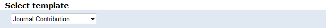
Choose one of the following templates
Type:
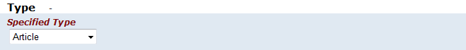
Type specified: An option to refine the type: Choose a type out of the dropdown list (different by template)
For Journal Contribution:
For Conference Material:
For Theses and Dissertations: Bachelor - Master - Phd
For Maps:
For Data Sets: To be defined by the submitter
For audiovisual Material: Audio - Image - Video
Fill out the name of the persons and/or institutes responsible for the publication/research item
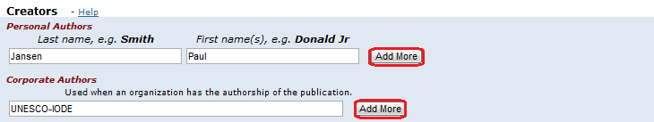
Enter the full and proper name by which this item should be known. All DSpace items must have a title!
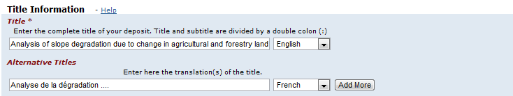
By clicking on the "Add More" button you can add as many titles as needed
Conference description:
Only for Proceedings paper and Conference contribution:
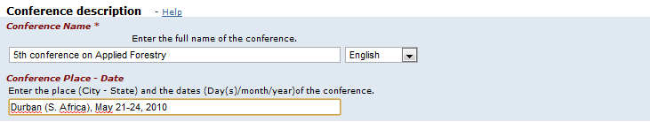
- Conference Name: The full name of the conference. A mandatory field
- Conference place: City and country
- Conference Date: Start and end date of the conference
The reference is different for the different types. Not all types have a reference block.
For Journal Contribution:
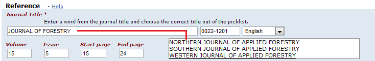
- Journal title: Enter a few characters. Choose the title out of of the dropdown list. The ISSN number will be automatically added. If the journal title is not available enter title and ISSN.
- Volume - Issue - Start and end page: Enter the data in the appropriate box
- Publisher an Place of Publication: Enter the data in the appropriate box
For Book section:

- Editors: The persons having the final responsibility of the content of the book, where the book section is a part of. See description.
- Book Title: Enter the data in the appropriate box. A mandatory field
- Edition - Start Page - End Page - ISBN : Enter only the number
- Series Name and Number: Enter the data in the appropriate box
- Publisher - Place of Publication: Enter the data in the appropriate box
For Proceedings paper:
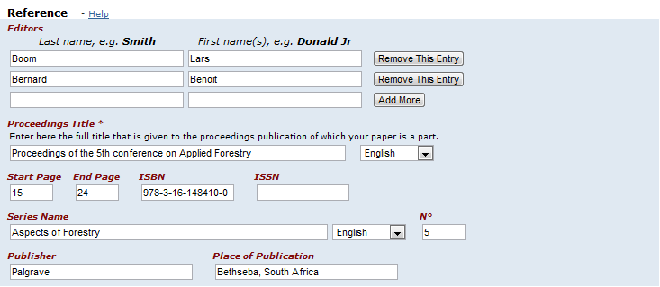
- Editors: The persons responsible having the final responsibility of the content of the book where the book section is a part of.
- Proceedings Title: Enter the data in the appropriate box. A mandatory field
- Start Page - End Page - ISBN - ISSN: Enter only the number
- Series Name and Number: Enter the data in the appropriate box
- Publisher an Place of Publication: Enter the data in the appropriate box
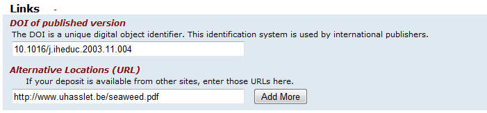
- DOI (Digital Object Identifier): International publishers assign to every publication a DOI, a stable system of identifying items on the Internet.
- Alternative Locations: If the document is also available on another website (publisher, personal webpage, …), enter the URL.

All these fields are mandatory - A publication has:
- A publication date: Only the year is mandatory.
- A status: From unpublished to submitted.
- A refereed status: if the publication passed through peer review.
- A publication can be written in different languages
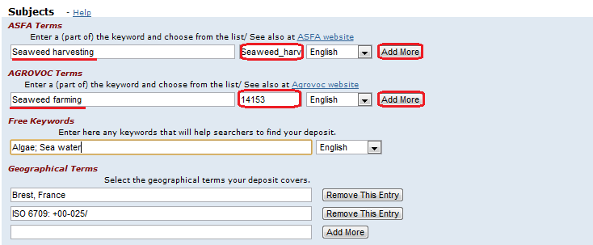
- ASFA terms: Enter some character and choose the searched term out of the alphabetic list (based on the ASFA thesaurus (Aquatic Science and Fisheries Abstract).
- AGROVOC terms: Enter some character and choose the searched term out of the alphabetic list (based on the AGROVOC thesaurus.
- Free Keywords: Choose your own keywords, Use a semicolon as a separator
- Geographical Terms: Use descriptions as well as geographic point locations (ISO 6709).Use a new box for every different term.
Description of Content
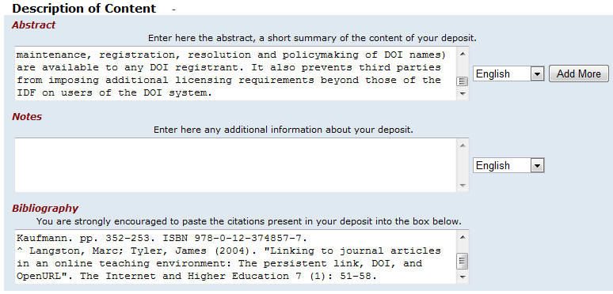
- Abstract: Enter a resume of the publication. If you want to enter a translated abstract, use ‘Add More’ to create a new entry box.
- Notes: Other Information can be filled out in Notes (about author affiliation, etc...
- Bibliography: Cut and paste the bibliography of your publication in the field ‘Bibliography’. This is very relevant metadata.
Intellectual Property
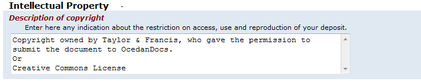
All information about copyright can be added here
Funding Organization
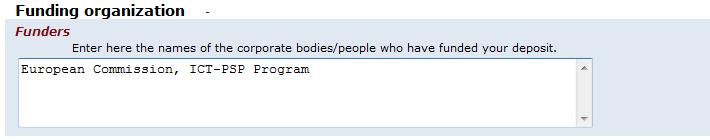
Funders sometimes request to be mentioned in the publication
| SUBMIT: Upload a File | top of submit | top |
There are two methods of entering the name of the file you wish to upload:
Type the full path and file name into the input box and then click on the "next" button in the lower right hand corner of the screen.
Click on the "browse" button and a window showing your files will appear. You can navigate through your directories and folders until you find the correct file to upload. Double-click on the file name you wish to upload, and the name will be entered into the input box.
Once the correct file name is in the input box, click on the "next" button to proceed.
If you specified at the beginning of the submit process that you had more than one file to upload for this item, you will see an input box marked "File Description". The information you provide here will help users to understand what information is in each file, for instance, "main article" or "images" or "computer program" or "data set". Enter file descriptions for each item, and click on the "next" button to proceed.
| SUBMIT: File Formats | top of submit | top |
To properly archive and give access to a file, we need to know what format it is, for example "PDF", "HTML", or "Microsoft Word". If the system does not automatically recognize the format of the file you have uploaded, you will be asked to describe it. If the format of the file appears in the list offered, click on it and then on "Submit". If you can't see the format in the list, click on "format not in list" and describe the format in the text box lower down on the page. Be sure to give the name of the application you used to create the file and the version of that application, for example "Autodesk AutoCAD R20 for UNIX".
For more information about file formats, see DSpace Supported Formats.
After you have uploaded a file, check the information in the table to make sure it is correct. There are two further ways to verify that your files have been uploaded correctly:
If you're only uploading one file, click on "Next" when you're happy that the file has been uploaded correctly.
If you're uploading more than one file, click on the "Add Another File" button (this will appear if you checked "The item consists of more than one file" on the "Submit: Describe Your Item" page). When you are satisfied that all files for this item have been successfully uploaded, click on the "Next" button.
If you're uploading an HTML page with embedded files, click on the "Add Another File" button, and upload all files or bitstreams referenced in the html page. After all the are uploaded, in the column marked "Primary Bitstream", select the bitstream or file that is the index page or the top page for the web page. This will ensure that all of your embedded files will display properly on the HTML page. Then click on the "Next" button.
DSpace generates an MD5 checksum for every file it stores; we use this checksum internally to verify the integrity of files over time (a file's checksum shouldn't change). You can use this checksum to be sure what we've received is indeed the file you've uploaded.
If you wish to verify the file using checksums, click "Show checksums" on the "Uploaded File" page. The DSpace-generated MD5 checksum for every file we've received from you will show to the right of the filename. You will then need to use a local program to generate your own checksum for these files, and verify that your results match ours. On most UNIX-like systems (including Mac OS X), use md5sum. For instance, type "md5sum MYFILE" for every file you want to check; the summary should print on your screen. For Windows machines, MD5 tools are freely available: try md5 (from http://www.fourmilab.ch/md5/), or md5sum, available via the textutils package in Cygwin (http://www.cygwin.com/). All of these utilities will need to be run from a command-line, or terminal, window. The entire digest printed out when you run the md5 tool on your local copy of the file you're uploading should be exactly equal to what DSpace reports.
| SUBMIT: Verify Submission | top of submit | top |
This page lets you review the information you have entered to describe the item. To correct or edit information, click on the corresponding button on the right, or use the oval buttons in the progress bar at the top of the page to move around the submission pages. When you are satisfied that the submission is in order, click on the "Next" button to continue.
Click on the "Cancel/Save" button to stop and save your data, or to cancel your submission.
| SUBMIT: License | top of submit | top |
DSpace requires agreement to this non-exclusive distribution license before your item can appear on DSpace. Please read the license carefully. If you have any questions, please contact your DSpace Administrator.
| SUBMIT: Submission Complete | top of submit | top |
Now that your submission has been successfully entered into the DSpace system, it will go through the workflow process designated for the collection to which you are submitting. Some collections require the submission to go through editing or review steps, while others may immediately accept the submission. You will receive e-mail notification as soon as your item has become a part of the collection, or if for some reason there is a problem with your submission. If you have questions about the workflow procedures for a particular collection, please contact the community responsible for the collection directly. You can check on the status of your submission by going to the My DSpace page.
| HANDLES | top |
When your item becomes a part of the DSpace repository it is assigned a persistent URL. This means that, unlike most URLs, this identifier will not have to be changed when the system migrates to new hardware, or when changes are made to the system. DSpace is committed to maintaining the integrity of this identifier so that you can safely use it to refer to your item when citing it in publications or other communications. Our persistent urls are registered with the Handle System, a comprehensive system for assigning, managing, and resolving persistent identifiers, known as "handles," for digital objects and other resources on the Internet. The Handle System is administered by the Corporation for National Research Initiatives (CNRI), which undertakes, fosters, and promotes research in the public interest.
| MY DSPACE | top |
If you are an authorized DSpace submitter or supervisor, or if you are a staff member responsible for DSpace collection or metadata maintenance, you will have a My DSpace page. Here you will find:
| EDIT PROFILE | top |
This page allows you to change the information we have for you. You must be authenticated with your log-in to change any of your personal information.
| SUBSCRIBE TO E-MAIL ALERTS | top |
Users can subscribe to receive daily e-mail alerts of new items added to collections. Users may subscribe to as many collections as they wish. To subscribe:
FOR FURTHER ASSISTANCE... |
top |
For help with using DSpace and questions about your specific site, please contact your DSpace Administrator.
For general information and news about DSpace, visit the DSpace Website.
Contents | Browse | Search | Communities | Collections | Submit | File Formats | My DSpace | Edit Profile | Subscribe to E-mail alerts